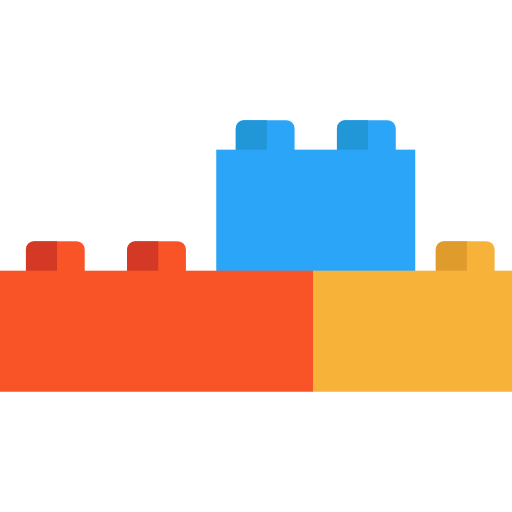

IA Python (classification, deep learning)

Hacking

Robotique
Badminton

LEGO

Japon
IA Python (classification, deep learning)
Hacking
Robotique
Badminton
LEGO
Japon
certains paragraphes peuvent contenir plus de détails que d'autres en cliquant dessus
je n'ai pas mis tous ce que j'ai fais pour éviter de trop surchargé la page,
j'ai donc selectionné les réalisations les plus impactente et pertinente pour un potentielle recrutement
Développeur informatique, passionné depuis l’âge de 12 ans, j'ai progressivement acquis des compétences dans des domaines variés. Je maîtrise plusieurs langages et continue de me former activement en cybersécurité via la plateforme TryHackMe.